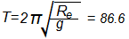
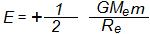

भू-स्थिर उपग्रह का परिक्रमण
किसी भू-स्थिर उपग्रह का परिक्रमण काल 24 घण्टे होता है, जबकि यह पृथ्वी तल से लगभग 36000 किमी की ऊँचाई पर स्थित होता है। यदि उपग्रह, पृथ्वी तल के अत्यंत निकट चक्कर लगा रहा हो, तो उसका परिक्रमण काल  मिनट होगा।
उपग्रह का परिक्रमण काल तथा कक्षीय वेग उपग्रह के द्रव्यमान पर निर्भर नहीं करते है। ग्रह के परिक्रमण काल का वर्ग कक्षा के अर्द्धदीर्घ अक्ष के घन के अनुक्रमानुपाती होता है, अर्थात T2 ∝ R3
पृथ्वी के समीप परिक्रमा करते हुए उपग्रह की बन्धन ऊर्जा
